18 Principal Component Analysis
18.1 Dimensionality Reduction
The goal of dimensionality reduction is to extract low dimensional representations of high dimensional data that are useful for visualization, exploration, inference, or prediction.
The low dimensional representations should capture key sources of variation in the data.
Some methods for dimensionality reduction include:
- Principal component analysis
- Singular value decomposition
- Latent variable modeling
- Vector quantization
- Self-organizing maps
- Multidimensional scaling
We will focus on what is likely the most commonly applied dimensionality reduction tool, principal components analysis.
18.2 Goal of PCA
For a given set of variables, principal component analysis (PCA) finds (constrained) weighted sums of the variables to produce variables (called principal components) that capture consectuive maximum levels of variation in the data.
Specifically, the first principal component is the weighted sum of the variables that results in a component with the highest variation.
This component is then “removed” from the data, and the second principal component is obtained on the resulting residuals.
This process is repeated until there is no variation left in the data.
18.3 Defining the First PC
Suppose we have \(m\) variables, each with \(n\) observations:
\[ \begin{aligned} {\boldsymbol{x}}_1 & = (x_{11}, x_{12}, \ldots, x_{1n}) \\ {\boldsymbol{x}}_2 & = (x_{21}, x_{22}, \ldots, x_{2n}) \\ \ & \vdots \ \\ {\boldsymbol{x}}_m & = (x_{m1}, x_{m2}, \ldots, x_{mn}) \end{aligned} \]
We can organize these variables into an \(m \times n\) matrix \({\boldsymbol{X}}\) where row \(i\) is \({\boldsymbol{x}}_i\).
Consider all possible weighted sums of these variables
\[\tilde{\pmb{x}} = \sum_{i=1}^{m} u_i \pmb{x}_i\]
where we constrain \(\sum_{i=1}^{m} u_i^2 = 1\). We wish to identify the vector \(\pmb{u} = \{u_i\}_{i=1}^{m}\) under this constraint that maximizes the sample variance of \(\tilde{\pmb{x}}\). However, note that if we first mean center each variable, replacing \(x_{ij}\) with \[x_{ij}^* = x_{ij} - \frac{1}{n} \sum_{k=1}^n x_{ik},\] then the sample variance of \(\tilde{\pmb{x}} = \sum_{i=1}^{m} u_i \pmb{x}_i\) is equal to that of \(\tilde{\pmb{x}}^* = \sum_{i=1}^{m} u_i \pmb{x}^*_i\).
PCA is a method concerned with decompositon variance and covariance, so we don’t wish to involve the mean of each indivdual variable. Therefore, unless the true population mean of each variable is known (in which case it would be subtracted from its respective variable), we will formulate PCA in terms of mean centered variables, \(\pmb{x}^*_i = (x^*_{i1}, x^*_{i2}, \ldots, x^*_{in})\), which we can collect into \(m \times n\) matrix \({\boldsymbol{X}}^*\). We therefore consider all possible weighted sums of variables: \[\tilde{\pmb{x}}^* = \sum_{i=1}^{m} u_i \pmb{x}^*_i.\]
The first principal component of \({\boldsymbol{X}}^*\) (and \({\boldsymbol{X}}\)) is \(\tilde{\pmb{x}}^*\) with maximum sample variance
\[ s^2_{\tilde{{\boldsymbol{x}}}^*} = \frac{\sum_{j=1}^n \tilde{x}^{*2}_j}{n-1} \]
The \(\pmb{u} = \{u_i\}_{i=1}^{m}\) yielding this first principal component is called its loadings.
Note that \[ s^2_{\tilde{{\boldsymbol{x}}}} = \frac{\sum_{j=1}^n \left(\tilde{x}_j - \frac{1}{n} \sum_{k=1}^n \tilde{x}_k \right)^2}{n-1} = \frac{\sum_{j=1}^n \tilde{x}^{*2}_j}{n-1} = s^2_{\tilde{{\boldsymbol{x}}}^*} \ , \] so the loadings can be found from either \({\boldsymbol{X}}\) or \({\boldsymbol{X}}^*\). However, it the technically correct first PC is \(\tilde{{\boldsymbol{x}}}^*\) rather than \(\tilde{{\boldsymbol{x}}}\).
This first PC is then removed from the data, and the procedure is repeated until all possible sample PCs are constructed. This is accomplished by calculating the product of \({\boldsymbol{u}}_{m \times 1}\) and \(\tilde{\pmb{x}}^*_{1 \times n}\), and subtracting it from \({\boldsymbol{X}}^*\): \[ {\boldsymbol{X}}^* - {\boldsymbol{u}}\tilde{\pmb{x}}^* \ . \]
18.4 Calculating All PCs
All of the PCs can be calculated simultaneously. First, we construct the \(m \times m\) sample covariance matrix \({\boldsymbol{S}}\) with \((i,j)\) entry \[ s_{ij} = \frac{\sum_{k=1}^n (x_{ik} - \bar{x}_{i\cdot})(x_{jk} - \bar{x}_{j\cdot})}{n-1}. \] The sample covariance can also be calculated by \[ {\boldsymbol{S}}= \frac{1}{n-1} {\boldsymbol{X}}^{*} {\boldsymbol{X}}^{*T}. \]
It can be shown that \[ s^2_{\tilde{{\boldsymbol{x}}}^*} = {\boldsymbol{u}}^T {\boldsymbol{S}}{\boldsymbol{u}}, \] so identifying \({\boldsymbol{u}}\) that maximizes \(s^2_{\tilde{{\boldsymbol{x}}}}\) also maximizes \({\boldsymbol{u}}^T {\boldsymbol{S}}{\boldsymbol{u}}\).
Using a Lagrange multiplier, we wish to maximize
\[ {\boldsymbol{u}}^T {\boldsymbol{S}}{\boldsymbol{u}}+ \lambda({\boldsymbol{u}}^T {\boldsymbol{u}}- 1). \]
Differentiating with respect to \({\boldsymbol{u}}\) and setting this to \({\boldsymbol{0}}\), we get \({\boldsymbol{S}}{\boldsymbol{u}}- \lambda {\boldsymbol{u}}= 0\) or
\[ {\boldsymbol{S}}{\boldsymbol{u}}= \lambda {\boldsymbol{u}}. \]
For any such \({\boldsymbol{u}}\) and \(\lambda\) where this holds, note that
\[ s_{ij} = \frac{\sum_{k=1}^n (x_{ik} - \bar{x}_{i\cdot})(x_{jk} - \bar{x}_{j\cdot})}{n-1} = {\boldsymbol{u}}^T {\boldsymbol{S}}{\boldsymbol{u}}= \lambda \]
so the PC’s variance is \(\lambda\).
The eigendecompositon of a matrix identifies all such solutions to \({\boldsymbol{S}}{\boldsymbol{u}}= \lambda {\boldsymbol{u}}.\) Specifically, it calculates the decompositon
\[ {\boldsymbol{S}}= {\boldsymbol{U}}{\boldsymbol{\Lambda}}{\boldsymbol{U}}^T \]
where \({\boldsymbol{U}}\) is an \(m \times m\) orthogonal matrix and \({\boldsymbol{\Lambda}}\) is a diagonal matrix with entries \(\lambda_1 \geq \lambda_2 \geq \cdots \geq \lambda_m \geq 0\).
The fact that \({\boldsymbol{U}}\) is orthogonal means \({\boldsymbol{U}}{\boldsymbol{U}}^T = {\boldsymbol{U}}^T {\boldsymbol{U}}= {\boldsymbol{I}}\).
The following therefore hold:
- For each column \(j\) of \({\boldsymbol{U}}\), say \({\boldsymbol{u}}_j\), it follows that \({\boldsymbol{S}}{\boldsymbol{u}}_j = \lambda_j {\boldsymbol{u}}_j\)
- \(\| {\boldsymbol{u}}_j \|^2_2 = 1\) and \({\boldsymbol{u}}_j^T {\boldsymbol{u}}_k = {\boldsymbol{0}}\) for \(\lambda_j \not= \lambda_k\)
- \({\operatorname{Var}}({\boldsymbol{u}}_j^T {\boldsymbol{X}}) = \lambda_j\)
- \({\operatorname{Var}}({\boldsymbol{u}}_1^T {\boldsymbol{X}}) \geq {\operatorname{Var}}({\boldsymbol{u}}_2^T {\boldsymbol{X}}) \geq \cdots \geq {\operatorname{Var}}({\boldsymbol{u}}_m^T {\boldsymbol{X}})\)
- \({\boldsymbol{S}}= \sum_{j=1}^m \lambda_j {\boldsymbol{u}}_j {\boldsymbol{u}}_j^T\)
- For \(\lambda_j \not= \lambda_k\), \[{\operatorname{Cov}}({\boldsymbol{u}}_j^T {\boldsymbol{X}}, {\boldsymbol{u}}_k^T {\boldsymbol{X}}) = {\boldsymbol{u}}_j^T {\boldsymbol{S}}{\boldsymbol{u}}_k = \lambda_k {\boldsymbol{u}}_j^T {\boldsymbol{u}}_k = {\boldsymbol{0}}\]
To calculate the actual principal components, let \(x^*_{ij} = x_{ij} - \bar{x}_{i\cdot}\) be the mean-centered variables. Let \({\boldsymbol{X}}^*\) be the matrix composed of these mean-centered variables. Also, let \({\boldsymbol{u}}_j\) be column \(j\) of \({\boldsymbol{U}}\) from \({\boldsymbol{S}}= {\boldsymbol{U}}{\boldsymbol{\Lambda}}{\boldsymbol{U}}^T\).
Sample principal component \(j\) is then
\[ \tilde{{\boldsymbol{x}}}_j = {\boldsymbol{u}}_j^T {\boldsymbol{X}}^* = \sum_{i=1}^m u_{ij} {\boldsymbol{x}}^*_i \]
for \(j = 1, 2, \ldots, \min(m, n-1)\). For \(j > \min(m, n-1)\), we have \(\lambda_j = 0\), so these principal components are not necessary to calculate. The loadings corresponding to PC \(j\) are \({\boldsymbol{u}}_j\).
Note that the convention is that mean of PC \(j\) is zero, i.e., that \[ \frac{1}{n} \sum_{k=1}^n \tilde{x}_{jk} = 0, \] but as mentioned above \(\sum_{i=1}^m u_{ij} {\boldsymbol{x}}^*_i\) and the uncentered \(\sum_{i=1}^m u_{ij} {\boldsymbol{x}}_i\) have the same sample variance.
It can be calculated that the variance of PC \(j\) is \[ s^2_{\tilde{{\boldsymbol{x}}}_j} = \frac{\sum_{k=1}^n \tilde{x}_{jk}^2}{n-1} = \lambda_j. \] The proportion of variance explained by PC \(j\) is \[ \operatorname{PVE}_j = \frac{\lambda_j}{\sum_{k=1}^m \lambda_k}. \]
18.5 Singular Value Decomposition
One way in which PCA is performed is to carry out a singular value decomposition (SVD) of the data matrix \({\boldsymbol{X}}\). Let \(q = \min(m, n)\). Recalling that \({\boldsymbol{X}}^*\) is the row-wise mean centered \({\boldsymbol{X}}\), we can take the SVD of \({\boldsymbol{X}}^*/\sqrt{n-1}\) to obtain
\[ \frac{1}{\sqrt{n-1}} {\boldsymbol{X}}^* = {\boldsymbol{U}}{\boldsymbol{D}}{\boldsymbol{V}}^T \]
where \({\boldsymbol{U}}_{m \times q}\), \({\boldsymbol{V}}_{n \times q}\), and diagonal \({\boldsymbol{D}}_{q \times q}\). Also, we have the orthogonality properties \({\boldsymbol{V}}^T {\boldsymbol{V}}= {\boldsymbol{U}}^T {\boldsymbol{U}}= {\boldsymbol{I}}_{q}\). Finally, \({\boldsymbol{D}}\) is composed of diagonal elements \(d_1 \geq d_2 \geq \cdots \geq d_q \geq 0\) where \(d_q = 0\) if \(q = n\).
Note that
\[ {\boldsymbol{S}}= \frac{1}{n-1} {\boldsymbol{X}}^{*} {\boldsymbol{X}}^{*T} = {\boldsymbol{U}}{\boldsymbol{D}}{\boldsymbol{V}}^T \left({\boldsymbol{U}}{\boldsymbol{D}}{\boldsymbol{V}}^T\right)^T = {\boldsymbol{U}}{\boldsymbol{D}}^2 {\boldsymbol{U}}^T. \]
Therefore:
- The variance of PC \(j\) is \(\lambda_j = d_j^2\)
- The loadings of PC \(j\) are contained in the columns of the left-hand matrix from the decomposition of \({\boldsymbol{S}}\) or \({\boldsymbol{X}}^*\)
- PC \(j\) is row \(j\) of \({\boldsymbol{D}}{\boldsymbol{V}}^T\)
18.6 A Simple PCA Function
> pca <- function(x, space=c("rows", "columns"),
+ center=TRUE, scale=FALSE) {
+ space <- match.arg(space)
+ if(space=="columns") {x <- t(x)}
+ x <- t(scale(t(x), center=center, scale=scale))
+ x <- x/sqrt(nrow(x)-1)
+ s <- svd(x)
+ loading <- s$u
+ colnames(loading) <- paste0("Loading", 1:ncol(loading))
+ rownames(loading) <- rownames(x)
+ pc <- diag(s$d) %*% t(s$v)
+ rownames(pc) <- paste0("PC", 1:nrow(pc))
+ colnames(pc) <- colnames(x)
+ pve <- s$d^2 / sum(s$d^2)
+ if(space=="columns") {pc <- t(pc); loading <- t(loading)}
+ return(list(pc=pc, loading=loading, pve=pve))
+ }The input is as follows:
x: a matrix of numerical valuesspace: either"rows"or"columns", denoting which dimension contains the variablescenter: ifTRUEthen the variables are mean centered before calculating PCsscale: ifTRUEthen the variables are std dev scaled before calculating PCs
The output is a list with the following items:
pc: a matrix of all possible PCsloading: the weights or “loadings” that determined each PCpve: the proportion of variation explained by each PC
Note that the rows or columns of pc and loading have names to let you know on which dimension the values are organized.
18.7 The Ubiquitous PCA Example
Here’s an example very frequently encountered to explain PCA, but it’s slightly complicated and conflates several ideas in PCA. I think it’s not a great example to motivate PCA, but it’s so common I want to carefully clarify what it’s displaying.
> set.seed(508)
> n <- 70
> z <- sqrt(0.8) * rnorm(n)
> x1 <- z + sqrt(0.2) * rnorm(n)
> x2 <- z + sqrt(0.2) * rnorm(n)
> X <- rbind(x1, x2)
> p <- pca(x=X, space="rows")PCS is often explained by showing the following plot and stating, “The first PC finds the direction of maximal variance in the data…”
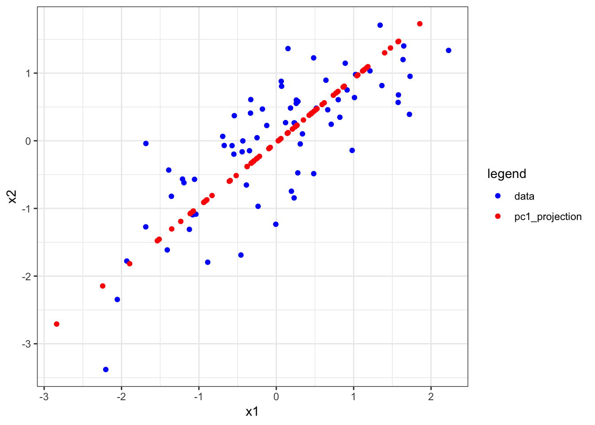
The above figure was made with the following code:
> a1 <- p$loading[1,1] * p$pc[1,] + mean(x1)
> a2 <- p$loading[1,2] * p$pc[1,] + mean(x2)
> df <- data.frame(x1=c(x1, a1),
+ x2=c(x2, a2),
+ legend=c(rep("data",n),rep("pc1_projection",n)))
> ggplot(df) + geom_point(aes(x=x1,y=x2,color=legend)) +
+ scale_color_manual(values=c("blue", "red"))The red dots are therefore the projection of x1 and x2 onto the first PC, so they are neither the loadings nor the PC. This is rather complicated to understand before loadings and PCs are full understood.
Note that there are several ways to calculate these projections.
# all equivalent ways to get a1
p$loading[1,1] * p$pc[1,]
outer(p$loading[,1], p$pc[1,])[1,] + mean(x1)
lm(x1 ~ p$pc[1,])$fit # and
# all equivalent ways to get a2
p$loading[2,2] * p$pc[2,]
outer(p$loading[,1], p$pc[1,])[2,] + mean(x2)
lm(x2 ~ p$pc[1,])$fitWe haven’t seen the lm() function yet, but once we do this example will be useful to revisit to understand what is meant by “projection”.
Here is PC1 vs PC2:
> data.frame(pc1=p$pc[1,], pc2=p$pc[2,]) %>%
+ ggplot() + geom_point(aes(x=pc1,y=pc2)) +
+ theme(aspect.ratio=1)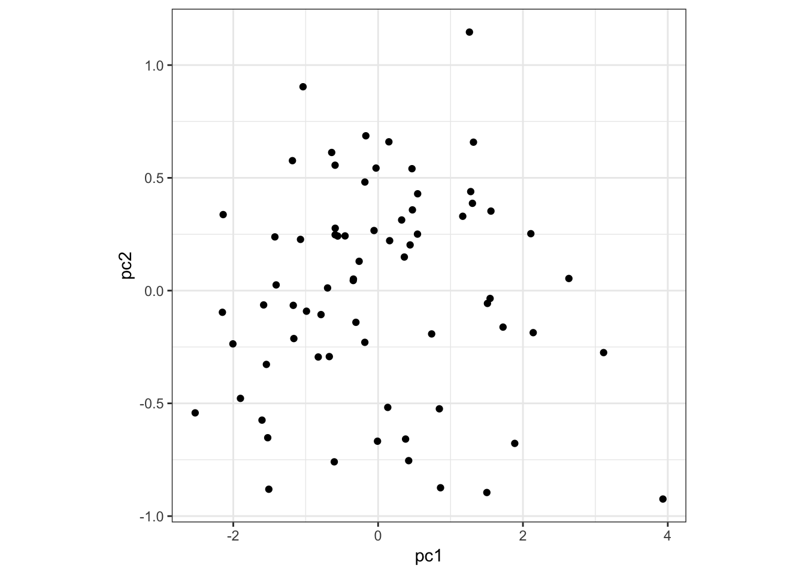
Here is PC1 vs x1:
> data.frame(pc1=p$pc[1,], x1=x1) %>%
+ ggplot() + geom_point(aes(x=pc1,y=x1)) +
+ theme(aspect.ratio=1)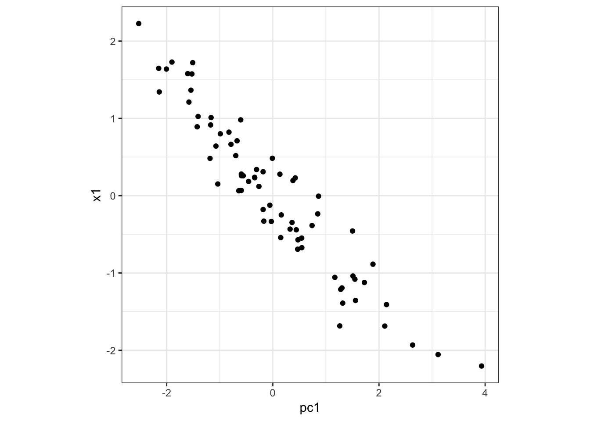
Here is PC1 vs x2:
> data.frame(pc1=p$pc[1,], x2=x2) %>%
+ ggplot() + geom_point(aes(x=pc1,y=x2)) +
+ theme(aspect.ratio=1)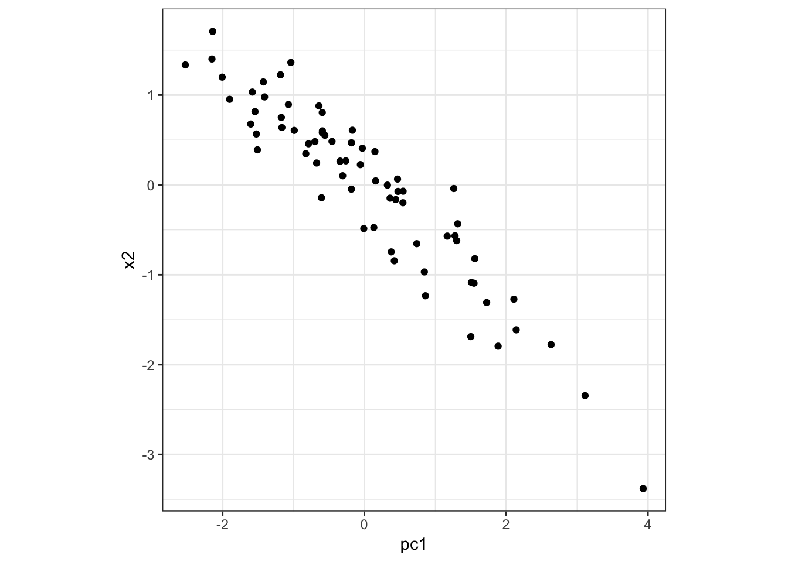
Here is PC1 vs z:
> data.frame(pc1=p$pc[1,], z=z) %>%
+ ggplot() + geom_point(aes(x=pc1,y=z)) +
+ theme(aspect.ratio=1)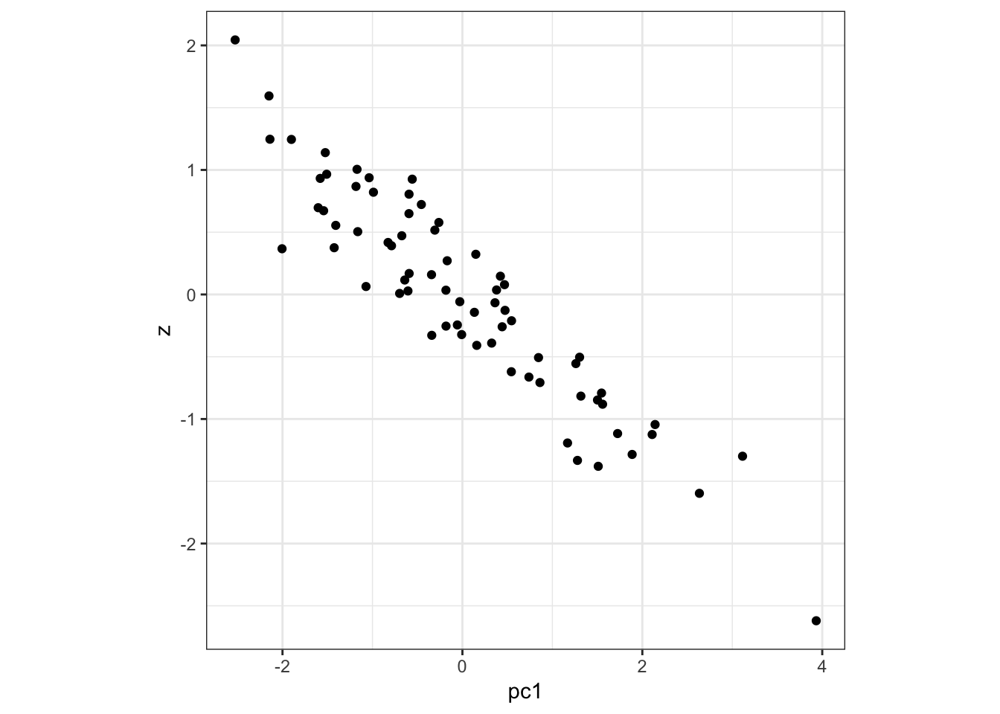
18.8 PC Biplots
Sometimes it is informative to plot a PC versus another PC. This is called a PC biplot.
It is possible that interesting subgroups or clusters of observations will emerge.
18.9 PCA Examples
18.9.1 Weather Data
These daily temperature data (in tenths of degrees C) come from meteorogical observations for weather stations in the US for the year 2012 provided by NOAA (National Oceanic and Atmospheric Administration).:
> load("./data/weather_data.RData")
> dim(weather_data)
[1] 2811 50
>
> weather_data[1:5, 1:7]
11 16 18 19 27 30 31
AG000060611 138.0000 175.0000 173 164.0000 218 160 163.0000
AGM00060369 158.0000 162.0000 154 159.0000 165 125 171.0000
AGM00060425 272.7619 272.7619 152 163.0000 163 108 158.0000
AGM00060444 128.0000 102.0000 100 111.0000 125 33 125.0000
AGM00060468 105.0000 122.0000 97 263.5714 155 52 263.5714This matrix contains temperature data on 50 days and 2811 stations that were randomly selected.
First, we will convert temperatures to Fahrenheit:
> weather_data <- 0.18*weather_data + 32
> weather_data[1:5, 1:6]
11 16 18 19 27 30
AG000060611 56.84000 63.50000 63.14 61.52000 71.24 60.80
AGM00060369 60.44000 61.16000 59.72 60.62000 61.70 54.50
AGM00060425 81.09714 81.09714 59.36 61.34000 61.34 51.44
AGM00060444 55.04000 50.36000 50.00 51.98000 54.50 37.94
AGM00060468 50.90000 53.96000 49.46 79.44286 59.90 41.36
>
> apply(weather_data, 1, median) %>%
+ quantile(probs=seq(0,1,0.1))
0% 10% 20% 30% 40% 50%
8.886744 49.010000 54.500000 58.460000 62.150000 65.930000
60% 70% 80% 90% 100%
69.679318 73.490000 77.990000 82.940000 140.000000 Let’s perform PCA on these data.
> mypca <- pca(weather_data, space="rows")
>
> names(mypca)
[1] "pc" "loading" "pve"
> dim(mypca$pc)
[1] 50 50
> dim(mypca$loading)
[1] 2811 50> mypca$pc[1:3, 1:3]
11 16 18
PC1 19.5166741 25.441401 25.9023874
PC2 -2.6025225 -4.310673 0.9707207
PC3 -0.6681223 -1.240748 -3.7276658
> mypca$loading[1:3, 1:3]
Loading1 Loading2 Loading3
AG000060611 -0.015172744 0.013033849 -0.011273121
AGM00060369 -0.009439176 0.016884418 -0.004611284
AGM00060425 -0.015779138 0.007026312 -0.009907972PC1 vs Time:
> day_of_the_year <- as.numeric(colnames(weather_data))
> data.frame(day=day_of_the_year, PC1=mypca$pc[1,]) %>%
+ ggplot() + geom_point(aes(x=day, y=PC1), size=2)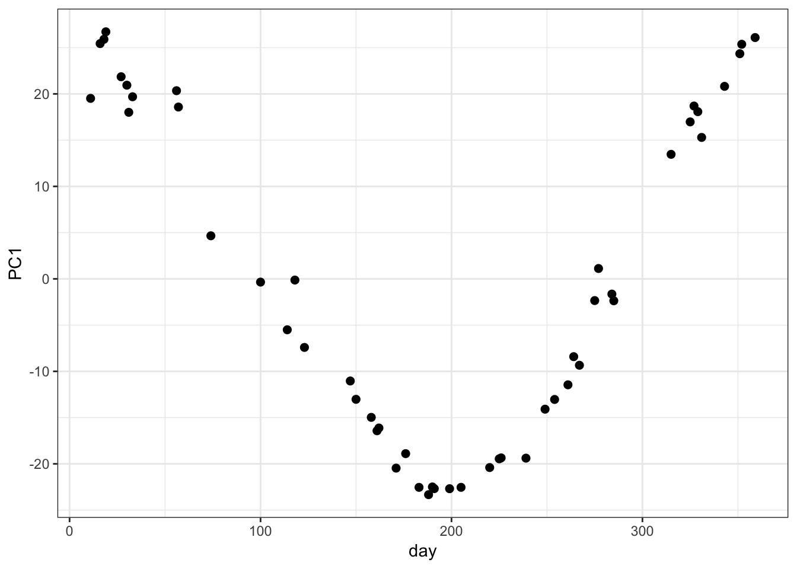
PC2 vs Time:
> data.frame(day=day_of_the_year, PC2=mypca$pc[2,]) %>%
+ ggplot() + geom_point(aes(x=day, y=PC2), size=2)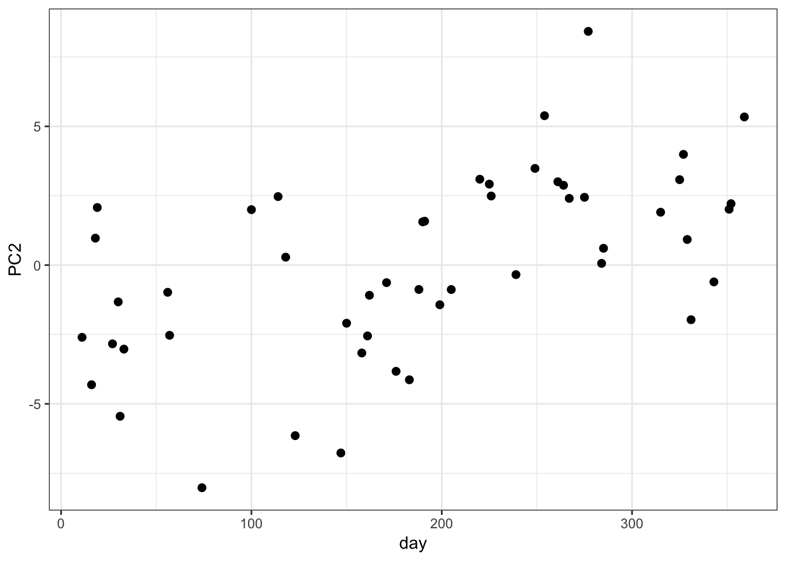
PC1 vs PC2 Biplot:
This does not appear to be subgroups or clusters in the weather data set biplot of PC1 vs PC2.
> data.frame(PC1=mypca$pc[1,], PC2=mypca$pc[2,]) %>%
+ ggplot() + geom_point(aes(x=PC1, y=PC2), size=2)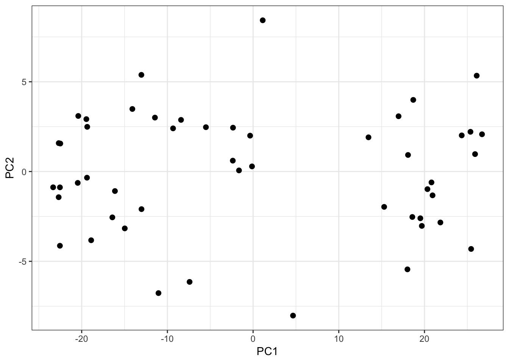
Proportion of Variance Explained:
> data.frame(Component=1:length(mypca$pve), PVE=mypca$pve) %>%
+ ggplot() + geom_point(aes(x=Component, y=PVE), size=2)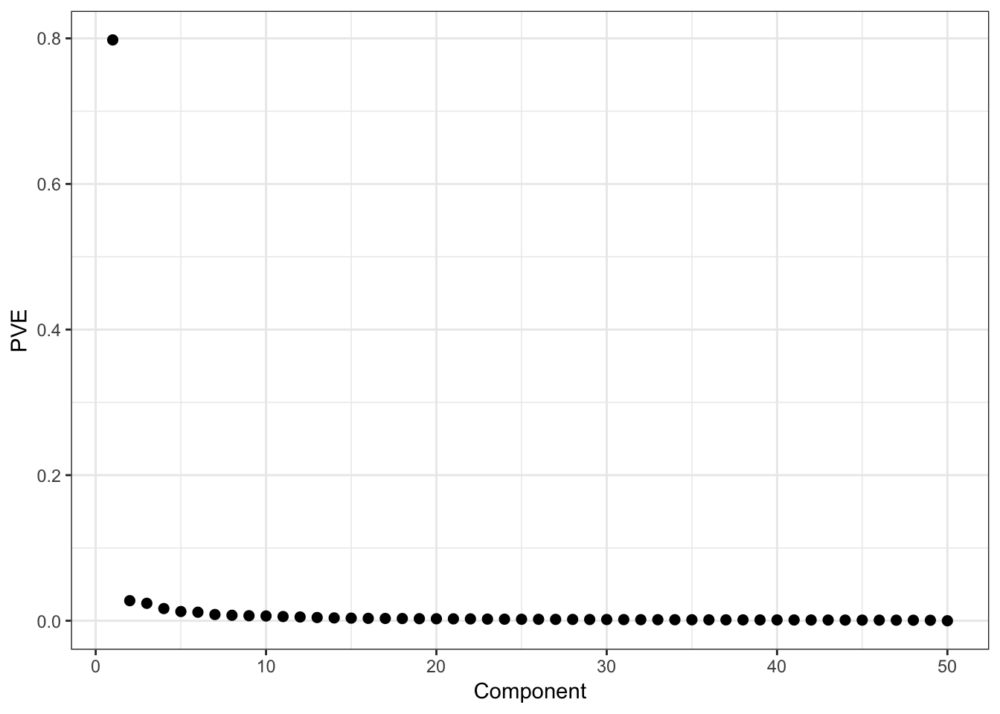
We can multiple the loadings matrix by the PCs matrix to reproduce the data:
> # mean centered weather data
> weather_data_mc <- weather_data - rowMeans(weather_data)
>
> # difference between the PC projections and the data
> # the small sum is just machine imprecision
> sum(abs(weather_data_mc/sqrt(nrow(weather_data_mc)-1) -
+ mypca$loading %*% mypca$pc))
[1] 1.329755e-10The sum of squared weights – i.e., loadings – equals one for each component:
> sum(mypca$loading[,1]^2)
[1] 1
>
> apply(mypca$loading, 2, function(x) {sum(x^2)})
Loading1 Loading2 Loading3 Loading4 Loading5 Loading6 Loading7
1 1 1 1 1 1 1
Loading8 Loading9 Loading10 Loading11 Loading12 Loading13 Loading14
1 1 1 1 1 1 1
Loading15 Loading16 Loading17 Loading18 Loading19 Loading20 Loading21
1 1 1 1 1 1 1
Loading22 Loading23 Loading24 Loading25 Loading26 Loading27 Loading28
1 1 1 1 1 1 1
Loading29 Loading30 Loading31 Loading32 Loading33 Loading34 Loading35
1 1 1 1 1 1 1
Loading36 Loading37 Loading38 Loading39 Loading40 Loading41 Loading42
1 1 1 1 1 1 1
Loading43 Loading44 Loading45 Loading46 Loading47 Loading48 Loading49
1 1 1 1 1 1 1
Loading50
1 PCs by contruction have sample correlation equal to zero:
> cor(mypca$pc[1,], mypca$pc[2,])
[1] 3.135149e-17
> cor(mypca$pc[1,], mypca$pc[3,])
[1] 2.273613e-16
> cor(mypca$pc[1,], mypca$pc[12,])
[1] -1.231339e-16
> cor(mypca$pc[5,], mypca$pc[27,])
[1] -2.099516e-17
> # etc...I can transform the top PC back to the original units to display it at a scale that has a more direct interpretation.
> day_of_the_year <- as.numeric(colnames(weather_data))
> y <- -mypca$pc[1,] + mean(weather_data)
> data.frame(day=day_of_the_year, max_temp=y) %>%
+ ggplot() + geom_point(aes(x=day, y=max_temp))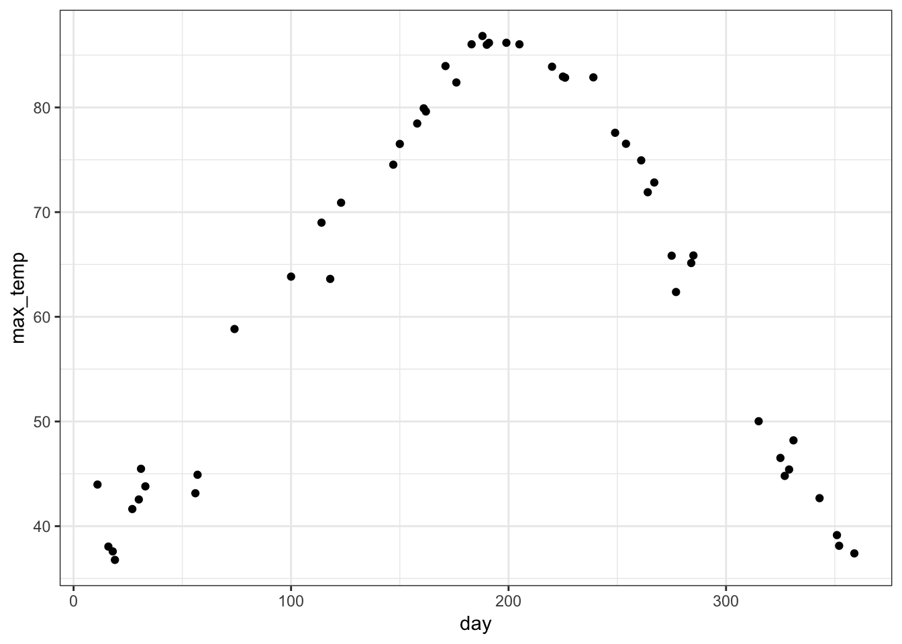
18.9.2 Yeast Gene Expression
Yeast cells were synchronized so that they were on the same approximate cell cycle timing in Spellman et al. (1998). The goal was to understand how gene expression varies over the cell cycle from a genome-wide perspective.
> load("./data/spellman.RData")
> time
[1] 0 30 60 90 120 150 180 210 240 270 330 360 390
> dim(gene_expression)
[1] 5981 13
> gene_expression[1:6,1:5]
0 30 60 90 120
YAL001C 0.69542786 -0.4143538 3.2350520 1.6323737 -2.1091820
YAL002W -0.01210662 3.0465649 1.1062193 4.0591467 -0.1166399
YAL003W -2.78570526 -1.0156981 -2.1387564 1.9299681 0.7797033
YAL004W 0.55165887 0.6590093 0.5857847 0.3890409 -1.0009777
YAL005C -0.53191556 0.1577985 -1.2401448 0.8170350 -1.3520947
YAL007C -0.86693416 -1.1642322 -0.6359588 1.1179131 1.9587021Proportion Variance Explained:
> p <- pca(gene_expression, space="rows")
> ggplot(data.frame(pc=1:13, pve=p$pve)) +
+ geom_point(aes(x=pc,y=pve), size=2)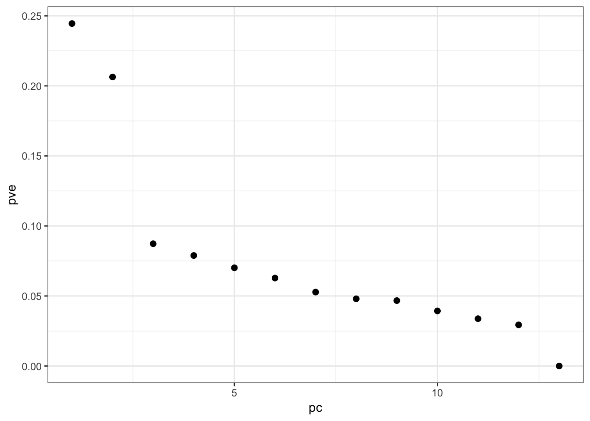
PCs vs Time (with Smoothers):
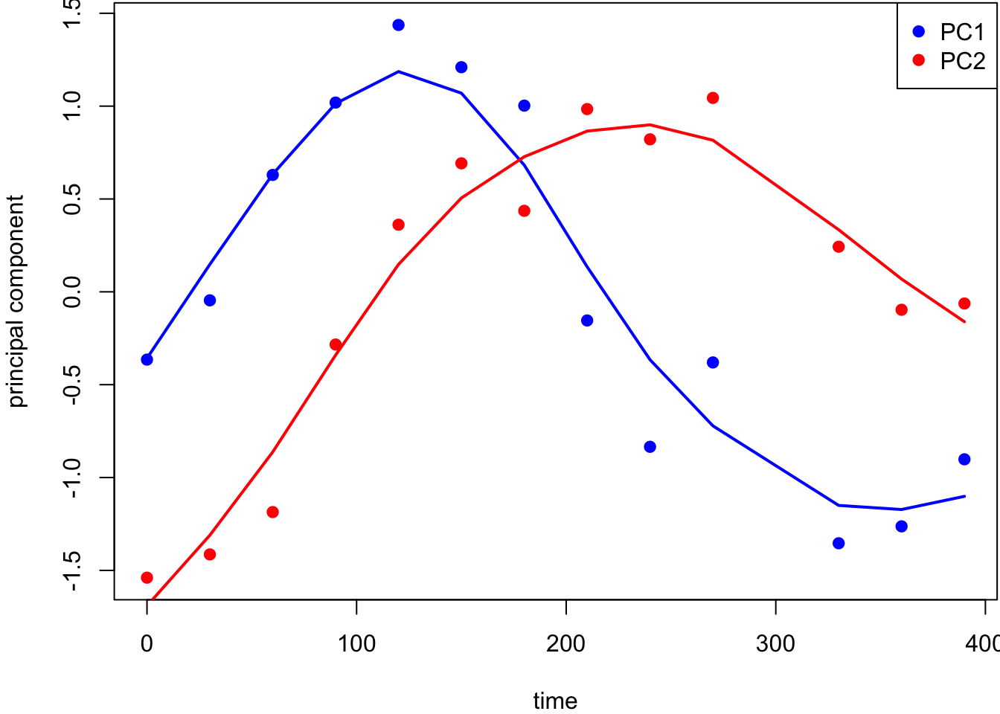
18.9.3 HapMap Genotypes
I curated a small data set that cleanly separates human subpopulations from the HapMap data. These include unrelated individuals from Yoruba people from Ibadan, Nigeria (YRI), Utah residents of northern and western European ancestry (CEU), Japanese individuals from Tokyo, Japan (JPT), and Han Chinese individuals from Beijing, China (CHB).
> hapmap <- read.table("./data/hapmap_sample.txt")
> dim(hapmap)
[1] 400 24
> hapmap[1:6,1:6]
NA18516 NA19138 NA19137 NA19223 NA19200 NA19131
rs2051075 0 1 2 1 1 1
rs765546 2 2 0 0 0 0
rs10019399 2 2 2 1 1 2
rs7055827 2 2 1 2 0 2
rs6943479 0 0 2 0 1 0
rs2095381 1 2 1 2 1 1Proportion Variance Explained:
> p <- pca(hapmap, space="rows")
> ggplot(data.frame(pc=(1:ncol(hapmap)), pve=p$pve)) +
+ geom_point(aes(x=pc,y=pve), size=2)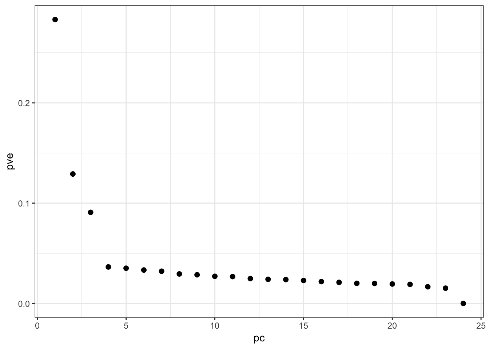
PC1 vs PC2 Biplot:
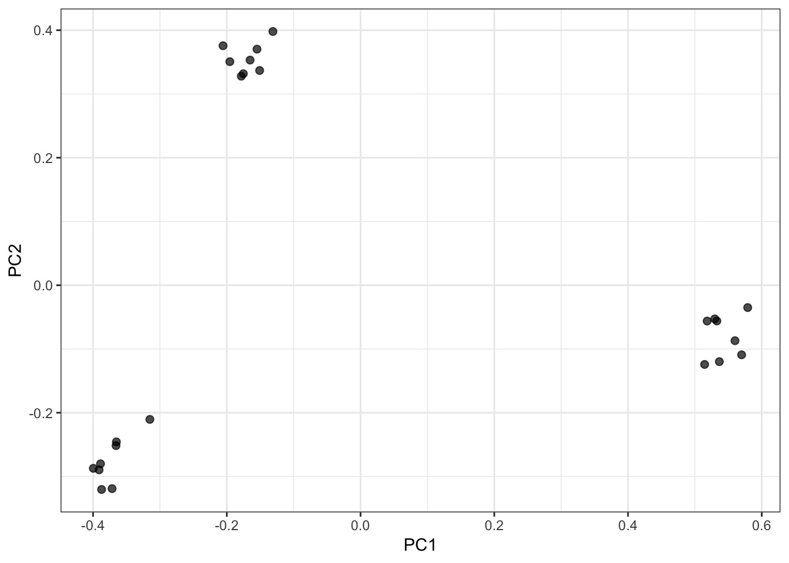
PC1 vs PC3 Biplot:
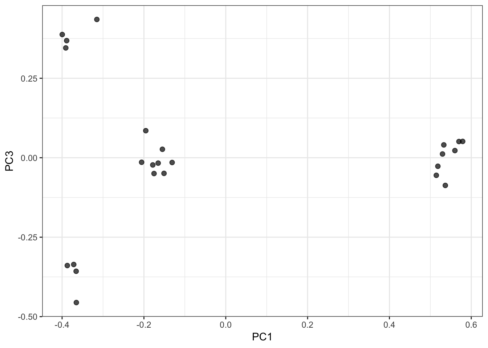
PC2 vs PC3 Biplot:
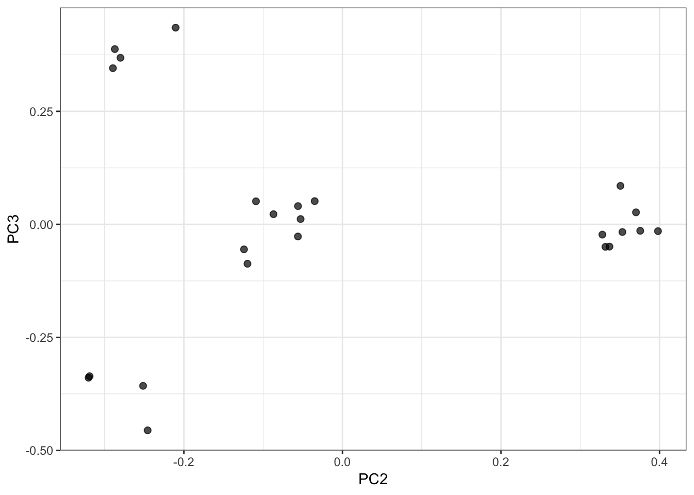